Creating a Web Connected, Multi-Player Mobile Game Using NetBeans
Contributed by Andrey Korostelev and Ivan Sidorkin.
This tutorial shows you how to create a simple mobile game using the Game Builder that is included in NetBeans IDE's Java ME support. The game has two main characters, Duke who is controlled by the player, and James who is managed by the computer. In the final section of the tutorial a web services to enable multiplayer gaming is created. The game project also uses Scalable Vector Graphics (SVG) form components to create a SVG-based UI.
Contents

Requirements
To complete this tutorial, you need the following software:
Creating a MIDP Application
In this section we create a new Mobile Information Device Profile (MIDP) application using NetBeans Java ME support that includes the
Visual Mobile Designer which simplifies the creation of mobile application workflow.
- Click the New Project button on the toolbar or select File > New Project from the main menu.
- Under Categories select Java ME and under Projects select Mobile Application and click Next.
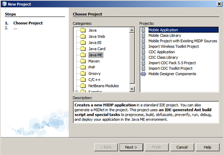
- Type MobileGame as the project name and uncheck the Create Hello MIDlet box and click Finish
to create the project.

Now you need to define the application workflow with the Visual Mobile Designer as follows:
- Expand the Source Packages node in the Project tree and select <default package>.
- To add a new java package to source packages, right-click the
<default package> node and select New > Java Package in the popup menu.
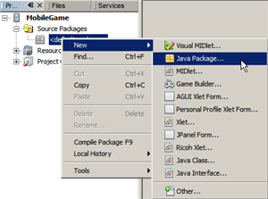
- In the New Java Package dialog box enter game for the package name and click Finish.

- To add a new VisualMIDlet to the game package, choose the game package in the Project view, then choose File > New File (Ctrl-N). Under Categories, select MIDP. Under File Types, select Visual MIDlet and click Next.
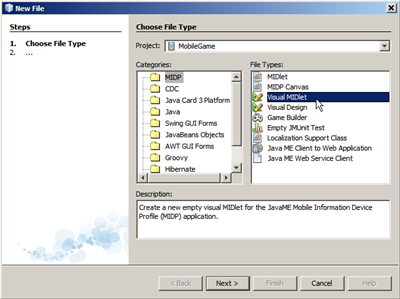
- Accept the defaults for the MIDlet and MIDP Class names and click Finish.
The new MIDlet is opened in Visual Mobile Designer's Flow view by default. The Mobile Device
element represents the MIDLet. The Visual Mobile Designer is a drag-and-drop interface
that enables adding new displayables and managing the application workflow.
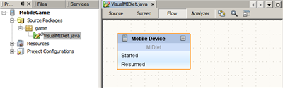
- Drag an SVG Form from the SVG Components category of the Palette and drop it in the Flow Designer.

- To make SVG Form the first displayable that is shown on the device screen after the MIDlet is started,
add a connection from the Started action of the Mobile Device to svgForm by dragging the mouse with the
left button pressed from the Started action to the svgForm component

- The next element to add to the application workflow is the game which cannot display in the Visual Mobile Designer until you import the game classes.
This step is described in the Creating the Application Flow in the Visual Mobile Designer section of the tutorial.
- After the game is finished, we show the winner using another SVG form. Add the second SVG form to the flow view as shown in the following image:
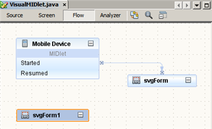
Note: To see the result, you may want to download and unzip the MobileGame-midpapp-created.zip project file and open the MobileGame project in the IDE.
top
Creating SVG UI
We can create compelling SVG menus and forms for our MIDP Application by using the tools included in the NetBeans IDE without any need
for external editors. The SVG Composer allows to compose an SVG Form using standard form components and the Visual Mobile Designer
lets you embed a form into the application workflow.
- To create a new java package intended for SVG menus and forms to source packages, right-click the Source Packages node and select New > Java Package in the popup menu.
- Specify svg as the package name and click Finish.
- Right-click the svg package node and select New > Other in the popup menu.
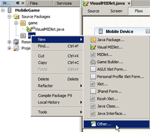
- In the New File dialog box, select Other > SVG File and click Next.

- Type main_form as the file name and click Finish. The main_form is created in the svg package and an empty image is opened in SVG Composer.

- Drag and drop the Label component from the Form Components group of the Palette to the image view in the editor
as shown in the following screenshot.
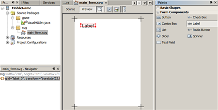
In the Navigator window, id = "label_0" is added to the main_form.svg xml image file.
- Drag and drop two Button Form Components to the SVG form like shown below.

-
Save your changes by clicking the Save all files button on the toolbar or type Ctrl+Shift+S.
Connecting SVG Images to SVG Form component in Visual Mobile Designer
- Open the VisualMIDlet.java file created in the previous exercise.
- Drag and drop the main_form.svg SVG image from project tree to the svgForm component in the Flow view
of the Visual Mobile Designer.
The svgButton and svgButton1 elements display in the SVG Buttons section
of the svgForm component.

If you select svgForm in the Visual Mobile Designer, the elements display in the
SVG Components node in the Navigator.

-
You can update the image connected to the svgForm component in the SVG Image Properties dialog box.
To open the Properties dialog box, right-click svgForm and choose Properties in the popup menu.
- Click the ellipsis button () next to the SVG Image property value, to open the SVG Image dialog box.
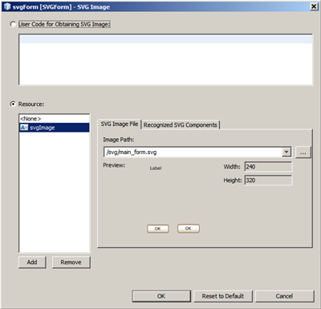
- Switch to the Recognized SVG Components tab to see all of the recognized SVG From Components.
Right-click the component row to change its tab order if needed.
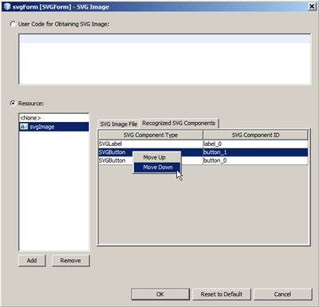
Customizing SVG Form Components
-
Now switch to the Screen view of Visual Mobile Designer and select svgForm from combo-box
like shown in the following screenshot.
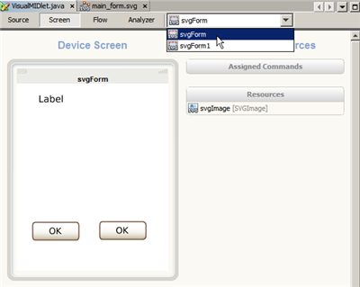
Note: When the svgForm preview opens in the editor, it allows you to see an approximate view of
the component on the device screen.
-
To make the Label text more descriptive, select the label in the Screen view and enter Collect Blocks as the Text property value in the Properties
view.
The new value displays in the Screen view.
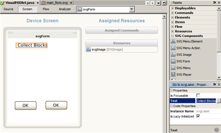
-
Select the left button and change its Text property to Play.
- Select the right button and change its Text property to Exit.
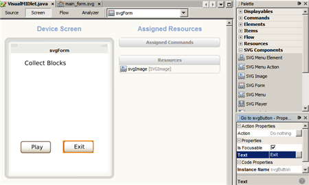
Note: Since a component selected in the Screen view displays in the Navigator view, the component's instance name displays both in the Properties window and in the Navigator tree.
Creating, Connecting and Customizing Second SVG Form Component
-
Repeat steps 3 to 5 from the Creating the SVG UI section to create a new SVG Image called game_result.
-
Drag and drop two labels and a button to the image as shown in the following screenshot and press Ctrl+Shift+S to save your changes.

- Open the VisualMIDlet.java file.
- In the Flow view, drag and drop game_result.svg from the Projects tree to the svgForm1 component to connect the game_result with the svgForm1 component.
In the Flow view, svgButton2 displays in the svgForm1 component.
In the Navigator view, svgButton2
and two SVG labels display in the MIDP Visual Design > Displayables > svgForm1 node.

- Switch to the Screen view and select svgForm1.
- Select the upper label and change its Text property value to The Winner Is: in the Properties view.
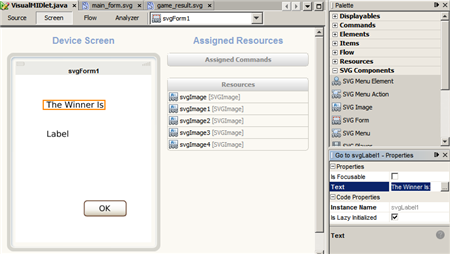
Note: You don't need to change the other two SVG elements for this application.
Assigning Actions to SVG Buttons
Now you can assign actions to the SVG Buttons you have open.
- In the Flow view of the VisualMIDlet, connect the svgButton2 action of the svgForm1 component to the svgForm.
This enables a user to open the main_form form (svgForm component in the Visual Mobile Designer) by clicking the OK button in the game_result form (svgForm1 component in the Visual Mobile Designer).

- Connect the Exit button of the svgForm component (svgButton1 in the Visual Mobile Designer) to the Mobile Device.
This stops the MIDlet after
the Exit button is clicked.
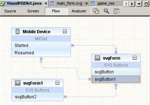
Since click on the Play svgButton should start the game, the svgButton needs to be connected to the game which
you create in the following exercise.
Note: To see the result, you may want to download and unzip the MobileGame-svg-ui-created.zip project file and open the MobileGame project in the IDE.
top
Creating the Game
In this section you create a mobile game based on the MIDP 2.0 Game API.
It takes up 30 minutes to complete.
NetBeans Java ME support provides
the Game Builder module to help create a game framework with the essential visual elements such as TiledLayers,
Sprites, and Scenes so that you can focus on creating the game logic.
Background Information
Visual editing support for the MIDP 2.0 Game API (JSR 178) includes creation and editing of Sprites, TiledLayers, and their arrangement into scenes. The main objective of the Game Builder module is to reduce the effort involved in creating common game components.
- Sprite – The Game Builder treats sprites as a collection
of animated sequences where each sprite can contain a number of sequences. The Sprite Editor enables editing and previewing of
multiple animated sequences.
- TiledLayer – Game backgrounds are made up
of TiledLayers which are a grid of cells painted with images for each frame. When a new TiledLayer is created it can be edited with
the Game Builder's visual editor. This allows the game producer to modify the contents of the TiledLayer and receive instant visual
feedback on the changes they made. The TiledLayer editor also includes support for animated tiles.
- Scene -
Scenes are locations within a game environment that have distinctive visual and even audio characteristics that help to define
the game's look and feel. Each level in a game can have several different scenes. Conversely, a simple game may have only one scene for all of its levels.
Before we proceed, take the following steps to open the MobileGame project which contains some additional files that are required:
- Download the MobileGame-for-creating-game.zip and unzip the file.
- In the IDE, choose File > Close Project to close the MobileGame project created in the Creating a MIDP Application section of the tutorial.
- In the IDE, choose File > Open Project and browse to the folder that contains the unzipped files with the MobileGame project.
- Click Open Project.
The MobileGame project displays in the Projects tab of the IDE.
Creating Visual Game Design File
-
In the Projects view, expand the MobileGame > Source Packages node.
-
Right-click the game package node and choose New > Game Builder .

- In the New File dialog box, accept the default GameDesign MIDP Class Name and click Finish.
- A GameDesign.java file displays in the Game Design view of the Game Builder.

Creating Sprites
The game features two sprites: dukeWhite and JamesG.
To create an animated sprite of a walking Duke, complete the following steps:
-
Click Create Sprite in the the Game Design view.
The New sprite dialog box opens.
- Enter dukeWhite in the Sprite name text field and choose images/duke.png from the Select Image list.
Note: The list contains all images of the supported type available in the current project.
- Move the sliders to adjust the
tile height and width to 25px and click OK.

The created sprite displays in the Sprite Editor of the Game Builder.
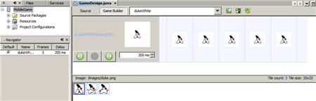
-
You can drag image tiles from the list at the bottom to specific frames of a sequence.
Drag appropriate images to the first four
frames above to get the following sequence:

-
Four tiles in enough to create the appearance of a walking Duke, therefore remove the three final frames from the sequence.
Control-click the frames and choose Remove selected frames from the popup menu.

To create the second sprite, JamesG, complete the following steps:
- In the editor toolbar, choose Game Design in the drop-down list to switch to the Game Design view.
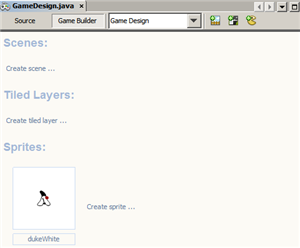
- Click Create Sprite to create another sprite.
- Enter JamesG as a name for a second sprite, select /images/james.png from the Select Image list, and adjust the tile size to the width and height of 25px and click OK.
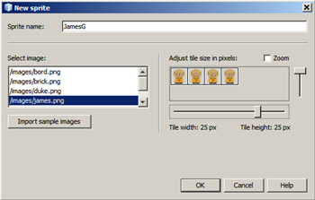
-
In the Sprite Editor of the Game Builder, modify the sprite sequence (like you did for the walking Duke sequence above) by dragging appropriate images to the first four frames above to get the following sequence:
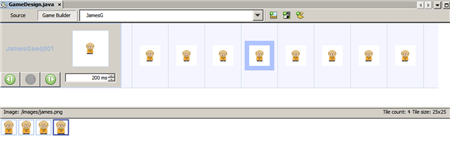
- Remove the last four frames in the sequence to get the following one:

Creating Tiled Layer
-
In the editor toolbar, choose Game Design in the drop-down list to switch to the Game Design view.
- Click Create tiled layer to add a new tiled layer to our game.
The New tiled layer dialog box opens.
- Type bricks as the tiled layer name, select /images/brick.png from the Select Image list, and verify that the tile size is 25x25 px.
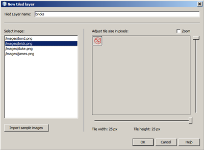
- Click OK.
The Tiled Layer editor displays.
- In the Tiled Layer editor, click the Paint mode button () to switch to the paint mode.
- Drag several bricks (brick.png) from the tiles list at the bottom into the table cells above.
The Tiled Layer with bricks to collect is ready.
Note: Leave the perimeter cells empty, available for creating a border layer later in this tutorial.

- In the editor toolbar, choose Game Design in the drop-down list to switch to the Game Design view.
- Click Create tiled layer to add another tiled layer to our game.
- In the New tiled layer dialog box, enter border as the tiled layer name, select /images/bord.png from the Select Image list.
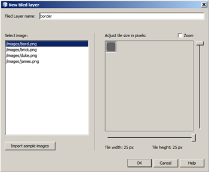
- Verify that the tile size is 25x25 px and click OK.
- In the Tiled Layer editor, click the Enable layer auto-resizing button (
 ).
).
This switches off the rows and columns auto add feature when you drag the mouse out of an existing layer.
- Draw a square border as shown in the following screenshot:

Creating Game Scene
- In the editor toolbar, choose Game Design in the drop-down list to switch to the Game Design view.
- Click Create scene.
The New Scene dialog box displays.
- Enter level1 as a scene name and click OK.
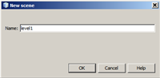
-
To add a tiled layer with bricks to the scene, right-click inside the Game Builder and choose Add tiled layer > bricks from the
popup menu.

- After the tiled layer with bricks displays, drag it to the top-left corner of the design canvas and press Ctrl + Shift + S.
- To add a tiled layer with the border to the scene, right-click inside the Game Builder and choose Add tiled layer > border from the popup menu.
- After the tiled layer with the border displays, drag it to the top-left corner of the design canvas and press Ctrl + Shift + S.
- To add the Duke sprite to the scene, right-click the canvas and choose Add sprite > dukeWhite from the popup menu.

- When the sprite is added, move it to the top-left corner of the canvas and press Ctrl + Shift + S.
- To add the JamesG sprite to the scene, right-click the canvas and choose Add sprite > JamesG from the popup menu.
- Move the JamesG sprite to the bottom left corner of the canvas like in the following screenshot:
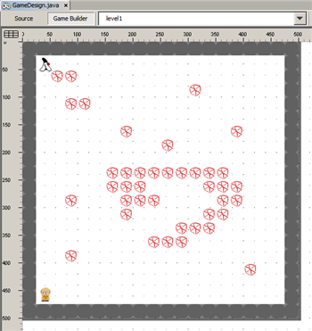
- Press Ctrl + Shift + S to save your changes.
The scene is done.
Note: To see the result, you may want to download and unzip the MobileGame-game-created.zip project file and open the MobileGame project in the IDE.
top
Adding Game Logic
In this section you are going to add gaming logic to manage the behavior of the tiled layers and sprites. You need to create a turn-tased strategy game where Duke and James collect bricks. Each player has five moves per turn. When the bricks are gone, the player with the most bricks collected wins.
Before going further, take the following steps to open the MobileGame project which contains some additional files prepared for this section:
- Download the MobileGame-for-adding-game-logic.zip and unzip the file.
- In the IDE, choose File > Close Project to close the MobileGame project created in the Creating the Game section of the tutorial.
- In the IDE, choose File > Open Project and browse to the folder that contains the unzipped files with the MobileGame project.
- Click Open Project.
The MobileGame project displays in the Projects tab of the IDE.
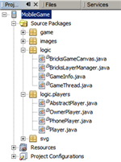
The project features the following new packages:
- logic - contains classes that manage the game workflow:
- BricksGameCanvas - GameCanvas extension that displays on the device screen;
- BricksLayerManager - manages the interaction between the sprites and tiled layers;
- GameInfo - current game session information available to players;
- GameThread - main game thread that runs in a separate thread to avoid interfering with the game UI.
- logic.players - contains classes for the player interface and its implementations:
- Player - basic player interface;
- OwnPlayer - human player implementation;
- PhonePlayer - player implementation managed by phone's processing power.
Adding GameCanvas to Visual Mobile Designer
The BricksGameCanvas which extends the GameCanvas, is the main displayable class of the game.
Let's add it into the application workflow using the Visual Mobile Designer.
To use the BricksGameCanvas in the Visual Mobile Designer, you need to add it to the Palette as a custom component as follows:
-
In the Projects view, double-click game > VisualMIDlet.java.
- Right-click inside the Palette area and select Palette Manager from the popup menu.

- In the Palette Manager dialog box, click Add to Palette.
The Add to Palette Wizard displays with the MobileGame project selected by default.
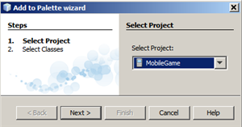
- Click Next.
- Select logic.BricksGameCanvas from the Select Classes list.

- Click Finish.
The BricksGameCanvas component is added to the Custom Palette Content group in the Palette Manager dialog box.

- Click Close to close the Palette Manager dialog box.
The BrickGameCanvas component is added to the Custom section of the Palette.

Adding GameCanvas to Application Workflow
-
Drag BrickGameCanvas from the Palette to
the Flow view of the VisualMIDlet.java.

Note: The alert element is used to display critical error messages to the user.
-
The BricksGameCanvas contains a constructor with the VisualMIDlet parameter:
public BricksGameCanvas(VisualMIDlet midlet)
To use this constructor in the source code generated by the Visual Mobile Designer, you need to update
the midlet(1.contructor-1.parameter defined property of the BricksGameCanvas.
- Click the ellipsis button () next to the midlet(1.contructor-1.parameter defined property value, to open the custom editor.
- In the Java Expression dialog box, type this and press OK.
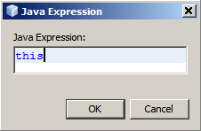
-
The GameCanvas should be open when a user clicks Play
in the svgForm.
To enable this behavior, add a connection from the svgButton
action in svgForm to the BricksGameCanvas displayable item like shown in the following image.

Starting Game Thread After Switching To GameCanvas
-
In the editor, click Source, to switch to the Visual Mobile Designer Source view.
- Add a new GameThread attribute to the VisualMIDlet class:
private GameThread myGameThread;
The source code in the editor should look like the following:

-
Go back to the Flow view, right-click the svgButton in the svgform, and choose Go To Source
from the popup menu.

In the expanded getSvgButton() method source, you need to add the code below to enable the following:
- Create a new GameThread object that implements Runnable;
- Create a new Thread object with GameThread as a parameter;
- Start the created thread.
myGameThread = new GameThread(getBricksGameCanvas(), VisualMIDlet.this);
Thread gameThread = new Thread(myGameThread);
gameThread.start();
- Paste the code snippet to replace the //Some action after switch comment
after the switchDisplayable method invocation as follows:
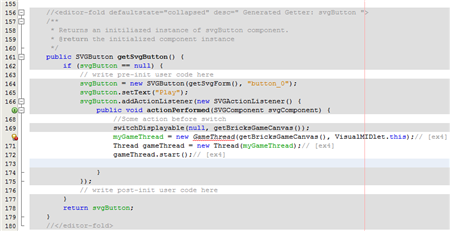
-
Now add the following stopGame() method to the end of the
class methods declarations. It stops the Game Thread when requested.
private void stopGame(){
if (myGameThread != null) {
myGameThread.requestStop();
}
}
The method should look like in the following picture:
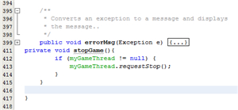
-
Find the gameOver method and add the following:
getSvgLabel2().setText(winnerName);
stopGame();
The method should look as follows:

-
Now add the stopGame() invocation to the destroyApp method body as follows:
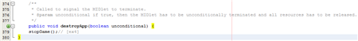
-
Right-click inside the source editor and choose Fix Imports from the popup menu to correct errors (alternatively, press Ctrl-Shift-I).
- Choose File > Save All to save your changes to the source code.
Initializing Game UI
You need to initialize the game UI parts, created in the GameDesigner, so that you can use them in BricksLayerManager.
- In the Projects view, double-click logic > BricksLayerManager.java to open the file.
- In the editor, find the public void init() method located after the constructor.
- Paste the following code to the beginning of the public void init() method body and remove the // [ex4 - add here] comment line:
gameDesign = new GameDesign();
dukeSprite = gameDesign.getDukeWhite();
jamesSprite = gameDesign.getJamesG();
dukeSprite.defineReferencePixel(dukeSprite.getWidth() / 2, 0);
jamesSprite.defineReferencePixel(jamesSprite.getWidth() / 2, 0);
dukeSpriteAnimator = new SpriteAnimationTask(dukeSprite, false);
jamesSpriteAnimator = new SpriteAnimationTask(jamesSprite, false);
bricksLayer = gameDesign.getBricks();
wallsLayer = gameDesign.getBorder();
gameDesign.updateLayerManagerForLevel1(this);
timer = new Timer();
timer.scheduleAtFixedRate(dukeSpriteAnimator, 0, gameDesign.dukeWhiteseq001Delay);
timer.scheduleAtFixedRate(jamesSpriteAnimator, 0, gameDesign.JamesGseq001Delay);
The method body should look as follows:

The inserted code performs the following actions:
Assigning Sprites to Players
In this step you will assign the Duke and James sprites to players. A static assignment is utilized here
but you are free to make it random or use any other rules you would like.
-
In the BricksLayerManager.java source code, find the initPlayers() method and paste the following code over the // paste players initialization here comment:
myPlayer1 = new OwnerPlayer(dukeSprite, dukeSpriteAnimator, myGameInfo);
myPlayer2 = new PhonePlayer(jamesSprite, jamesSpriteAnimator, myGameInfo);
The result looks like the following:
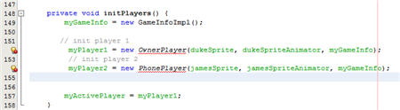
Note: The pasted code snippet enables the project to:
- Create the OwnerPlayer instance connecting it to the Duke sprite
- Create the PhonePlayer instance connecting it to the James sprite
-
Right-click inside the source editor and choose Fix Imports from the popup menu (alternatively, press Ctrl + Shift + I).
- Choose File > Save (alternatively, press Ctrl + S) to save your changes.
Playing Game
It's time to test your game.
-
In the Projects view, right-click the MobileGame project node and choose Run With from the popup menu.
The Quick Project Run dialog box displays.
- Choose DefaultCldcPhone1 in the Select Device drop-down list.
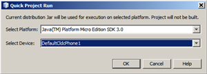
- Click OK.
The project builds and the phone emulator launches.
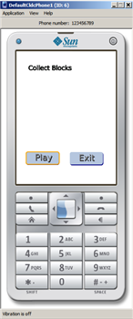
Note: You need to use the buttons in the phone's UI to launch and play
the game (for example, press the Up and Down arrow keys of the phone emulator to select Play or Exit).
- Select Play and click the button in the middle of the phone emulator to start the game.
The game canvas and game thread start and the device screen displays the following game information:
- Current player - either You or the Foe
- Bricks - the total number on the canvas and the number collected by the active player
- Steps left - Steps remaining in the current turn
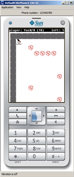
Enjoy the game!
Note: To see the result, you may want to download and unzip the MobileGame-game-logic-added.zip project file and open the MobileGame project in the IDE.
top
Playing with Friends
The game you have created allows to compete against the default player mode that runs on your mobile phone.
In this section you extend the game to allow multiple players using a web service that lets you exchange
moves with an opponent on another mobile device. The Java ME Web Service API (JSR 172) support in the NetBeans IDE
helps you to add this extended functionality to your application.
Starting Web Service
You need to deploy and start a web service to enable multi-player gaming. For testing purposes you will
use your own Web Service that runs locally.
- Download the MobileGame-for-multiple-players.zip and unzip the file.
- In the IDE, choose File > Close Project to close the MobileGame project created in the Adding Game Logic section of the tutorial.
- In the IDE, choose File > Open Project and browse to the folder that contains the unzipped files.
- Choose BrickGameWebApplication and click Open Project.
The BrickGameWebApplication project displays in the Projects tab of the IDE.
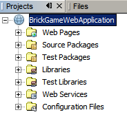
- Right-click the Project node and choose Deploy from the popup menu.
The Application Server starts and the Web Application project is deployed.

Before going further, take the following steps to open the MobileGame project which contains some additional files required for this section:
- In the IDE, choose File > Open Project and browse to the folder that contains the unzipped MobileGame-for-multiple-players.zip files with the MobileGame project.
- Click Open Project.
The MobileGame project displays in the Projects tab of the IDE.
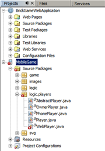
A new WebPlayer implementation is added to the logic.players package.
The WebPlayer implementation uses the web service client to send your moves to the web service and load the foe's moves.
Note: The project features files with errors since the code is not yet compilable and needs the web service
you are going to create.
Creating New Configuration
In this section you create a new project configuration that allows you to have both online and offline versions of the same project.
- Right click the MobileGame project node and choose Properties from the popup menu.
The MobileGame dialog box displays.
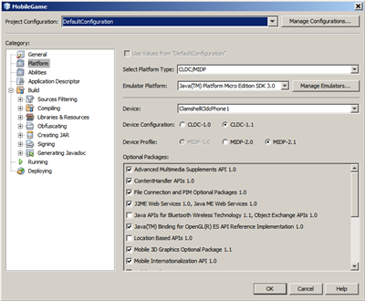
- In the Project Properties dialog box, choose Running in the Category list and select
Add Configuration in the Project Configuration drop-down list.
The Add Configuration dialog box displays.
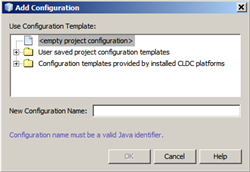
- Enter OnlineGame for the new configuration name and click OK.
The new project configuration is created and is currently the active configuration.
-
In the MobileGame configuration dialog box, select Abilities from the Category menu.
- Deselect the "Use Values from DefaultConfiguration" option.

- Click Add.
The Add Ability dialog box displays.

- In the Add Ability dialog box, type ONLINE as the name and true as the value and
click OK.
- Click OK to close the MobileGame dialog box.
Generating Web Service Client
Let's generate a web service client using the wizard provided by the NetBeans IDE Mobility.
-
In the Projects view, right-click the MobileGame project node and choose New > Java ME Web Service Client from the popup menu.
The New Java ME Web Service client dialog box displays.
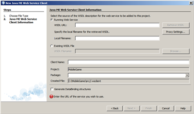
-
In the WSDL URL field, enter http://localhost:8080/BrickGameWebApplication/BricksWebServiceService?wsdl and click
Retrieve WSDL.
BricksWebServiceService.wsdl is loaded and validated. The Client Name and Package fields are automatically filled out.

- Enter BricksWebService in the Client Name field and wsclient in the Package field.
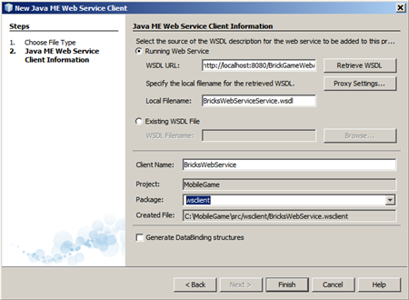
- Click Finish.
The Web Service client stub is generated.

Note: The logic.player.WebPlayer.java is no
longer broken. Otherwise ensure no typos are made in the Web Service Client name or package.
Using Web Service Client to Start Multiplayer Game
You are going to use WebPlayer in this section. It generates a Web Service Client that displays player moves with the opponent playing on the other device.
First you need to initialize the game.
-
In the Projects view, expand the MobileGame > Source Packages > logic node and double-click the BricksLayerManager.java file to open it in the source editor.
- Add the following attribute and method code to the BricksLayerManager class:
private BricksWebServiceService client = null;
public BricksWebServiceService getMobileClient() {
if (client == null) {
client = new BricksWebServiceService_Stub();
}
return client;
}
- Find the initPlayers() method in the code. Update the method so that it uses a different behavior depending on
the selected project configuration by replacing the four lines where the players are initialized.

Replace the existing code highlighted above with the following:
//#if ONLINE == "true"
try {
String id = getMobileClient().initPlayer("");
int order = 0;
while ((order = getMobileClient().startGame(id)) == 0){
myWaitingForOpponent = true;
Thread.sleep(500);
}
myWaitingForOpponent = false;
if (order == 1) {
myPlayer1 = new OwnerPlayer(dukeSprite, dukeSpriteAnimator, myGameInfo);
myPlayer2 = new WebPlayer(jamesSprite, jamesSpriteAnimator, myGameInfo,
getMobileClient(), id);
} else {
myPlayer1 = new WebPlayer(dukeSprite, dukeSpriteAnimator, myGameInfo,
getMobileClient(), id);
myPlayer2 = new OwnerPlayer(jamesSprite, jamesSpriteAnimator, myGameInfo);
}
} catch (RemoteException ex) {
myCanvas.errorMsg(ex);
} catch (InterruptedException ex) {
myCanvas.errorMsg(ex);
}
//#else
//# // init player 1
//# myPlayer1 = new OwnerPlayer(dukeSprite, dukeSpriteAnimator, myGameInfo);
//# // init player 2
//# myPlayer2 = new PhonePlayer(jamesSprite, jamesSpriteAnimator, myGameInfo);
//#endif
The initPlayers method should now look as follows:

Note the following conditional attributes in the pasted code:
- If the ONLINE ability exists and its value equals "true", the first part of the code
registers the Player in the service using the getMobileClient().initPlayer("") method. The game is
then started with the getMobileClient().startGame(id) invoked in case there is no opponent.
- Typically it is better to initialize the game in a separate thread to avoid conflict with the game UI.
In order to simplify this example and reduce the amount of code needed, this procedure is skipped.
- After the opponent appears and the game is initialized the Players are connected to Sprites depending on
the playing order chosen.
- Notice that that code in the else clause is the same as it was before. If the game application is
not online, this part of the code is compiled and used. This means that you must right-click and choose Fix Imports
from the contextual menu for the project to run successfully.
Running Game in Emulator
You can now run the project with two "remote" players.
- In the Projects view, right-click the MobileGame project node and choose Run With from the popup menu.
The Quick Project Run dialog box displays.
- Choose DefaultCldcPhone1 in the Select Device drop-down list.
- Click OK.
The project builds and the first instance of the phone emulator launches.
- In the Projects view, right-click the MobileGame project node and choose Run With from the popup menu.
The Quick Project Run dialog box displays.
- Choose DefaultCldcPhone2 in the Select Device drop-down list.
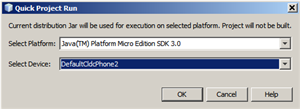
- Click OK.
The project builds and the second instance of the phone emulator launches.
You can switch between the emulators and play for both players.

Note: To see the result, you may want to download and unzip the MobileGame-for-multiple-players-ready.zip project file and open the MobileGame project in the IDE.
Troubleshooting:
- If you cannot access the web service WSDL, check your network settings. A firewall
or antivirus shield can prevent applications from connecting to the web service.
- If the application cannot reach the web service URL, you can deploy the web service to an application server on your own machine.
Summary
This tutorial showed how to create a Java ME game with a SVG-based UI using the NetBeans IDE. It also showed how to connect the application to a web service to enable multi-player gaming.
top
See Also
top
{kind=link}


{kind=link}
{kind=link}
{kind=link}
{kind=link}
{kind=link}
{kind=link}
{kind=link}
{kind=link}
{kind=link}
{kind=link}
{kind=link}
{kind=link}
{kind=link}
{kind=link}
{kind=link}
{kind=link}
{kind=link}
{kind=link}
{kind=link}
{kind=link}
{kind=link}
{kind=link}
{kind=link}
{kind=link}
{kind=link}
{kind=link}
{kind=link}
{kind=link}
{kind=link}
{kind=link}
{kind=link}
{kind=link}
{kind=link}
{kind=link}
{kind=link}
{kind=link}